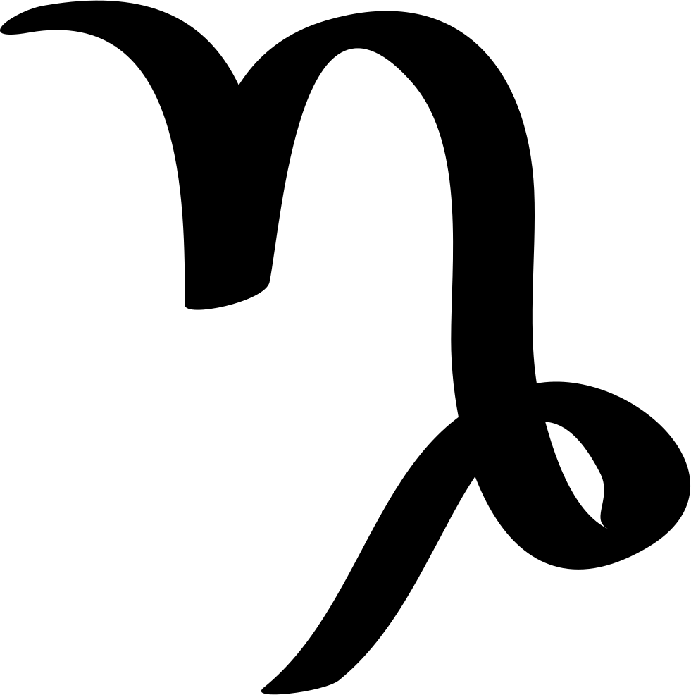

ASTROLOGY
HOW 2020 WILL MOST LIKELY BE FOR YOU

According to Horoscope.com Aries is a fire sign that always is ready for whatever challenges life brings to them, and this year they will be prepared for anything. Aries feed off the fast-paced energy from your dynamic power planet Mars and 2020 starts with this aggressive planet in Sagittarius, the sign of adventure and knowledge. World travel now is an amazingly eye-opening experience now (hopefully after Covid-19 you can travel!). Aries tend to be rich with valuable learning experiences. It will take another several months, until the end of June, until Mars reaches its most dominant placement in your sign, where it will stay for the next two months. Winning is your main objective and an Aries never give up and they stay determined.

Leos love to be exposed in attention so it’s only fitting that your ruler is the ego-boosting sun. You will find yourself doing things for the sense of accomplish more than the glory. You feel that the feeling of accomplishment will help you and motivate you to do more. That all changes by the end of July, however, when the sun moves into your flashy sign and welcomes in your birthday month. Your mood is outgoing and playful, and you crave strong reactions to your antics. For the next four weeks you’re the life of the party. You will feel more energetic and want all the attention on you. Since one strong characteristic about a leo is that they are creative, you will so many creative things to do in this year whether your home or outside, you will imagine and do so much creative things

In 2020 the Cancer sign is linked with your roller coaster emotions. Paying close attention to the moon’s movements will help you understand your moodiness a little better this year, starting with a full moon/lunar eclipse in your sign in the middle of January. You may feel lasting effects of this lunation as it is closely tied to family relationships, especially parent-child. Reunions and healing can take place now but be careful not to fall back into the same old unhealthy dynamics you’ve been trying to escape once the happiness become less intense. A new moon/solar eclipse in your sign at the end of June coincides with the start of your birthday month, giving you a chance to reboot and begin again. This is a chance to figure out what’s been missing and what’s okay to let go of. Your focus in 2020 is to make yourself better and realize what your bad habits are and let go of them to be a better person.

In 2020 for Pisces this is the time to really dream big. Pay attention to intuition and visions, your state of mind is an accurate window into your soul and what you truly want this year. So dream big and work hard to achieve your bug goals of the year or even your life. But you have to get use tosometgingsand bear them, you won’t want to face the realities that slowly creep in. You’re tougher than you seem though, so having to face the music can be a blessing in disguise.If you are ever stressed out you tend to listen to music to escape reality. But after you relieve your stress you have to stay strong and continue fighting to your goals.

2020 will be major growing year for a Scorpio. Much of what you reap in the way of rewards comes from efforts made in the past. For Scorpios, 2020 will be a lucky year. In 2020, the people born under this zodiac sign are fortunate in all respects, and they can achieve the best things if this is what they desire. In 2020 you should take the time to take advantage of the benefits of the celestial position: persuasion power, mental strength, analytical capacity, talent for research and investigation, interest in psychology and different deep, subtle, or even mysterious topics, and the ability to protect yourself against its unpleasant influence: excessive critical sense, negative thoughts, anxiety or phobias, nervous tension, the tendency to manipulate other people. So in 2020 your focus is to live happy and avoid these harmful thing sto your mental health if you want to achieve big and stay strong.

For Taurus in 2020 your mind opens to new ideas in both areas. You’re more comfortable. Pleasure and passion combine now to help you enjoy the finer things in life. You will tend to be happier and more motivated. But although you will realize and think about the difference of love and money. While you can’t imagine living life without a lot of either, it’s interesting to consider the alternatives. You’re ready to work hard in exchange for the pleasures that life has to offer especially during this year. But you also have to be as open-minded and flexible as possible will get you
through some rough patches during this year.

In 2020 you will feel outgoing, adventurous nature is backed by your power planet(jupiter). Although the mood still isn’t that light for you in these months. Your good luck is directly tied to your actions this year, essentially ensuring that you make your own luck by working hard and actively shaping your own future. Trust yourself with your decisions because you will be rewarded. You should give yourself a chance to review your goals, and reconsider some of your opinions and ideals. But if you’ve been wrong, admit your mistake and change your direction. You also love to talk to people and expand your universe through world travel, which can all come to a standstill during this year’s three Mercury retrograde periods. To get through the hardships you have to rely on your instincts and when you through can be a lifesaver. Trust your gut and you will make the right decisions.

In 2020 you should slow down when dealing with the obstacles like miscommunications, misunderstandings and commuting misunderstandings. This will be challenging for you, but you have to bear with these obstracles ypu will get through them and be happy at the end. This year is also a good time to get close with people you wanted to get close to like either siblings or a friend Whether you text each other several times a day or haven’t seen one another in years, strengthening your bond is possible now and you won’t regret it afterwards.

During this year it is best that you set an optimistic tone for the year. Feeling open minded and sociable is a great way to start 2020. Your positive actions can be very effective. Your decisions will be great and good for you and you will be rewarded with many good things. You need to have more family time and get to spend time and have fun with them. During this year it is also important to create a positive living environment, not only at home but also in your heart, is the solution to all the problems. Give yourself more time to relax, and to recharge your batteries. This will help your mental health so you are prepared and ready to move on.

In 2020 you will most likely experience a romantic, dreamy flow of love that will help you be more understanding, forgiving and affectionate towards others. You also have to put close relationships in the spotlight. Don’t let your willingness to negotiate with people lead to crippling indecisiveness.You will tend to think deeply about incongruities in your life. This transit encourages you to explore dualities in your life and work out love and hate relationships so you can find the balance and peace that you value so highly. It will also be challenging to make decisions these daays so trust yorself and make the right decisions and to be too concky when decideding you have to know the results of each decision you make.

In 2020 you will combine the old with the new to be more successful this year. You should be really focused on your goals now and may be determined with your ultimate purpose in life. You will be willing to make changes to meet your full potential, but a hardworking goat is never afraid to do whatever it takes to climb to the top. As an Aries you strive for success and you you never give up. Development and progress in all areas of life are possible this year if you focus on yourself and what’s most important.You might be encouraged to look back on the past several months for areas in your life that could use a do over. You will think about your past mistakes and learn to not do them again so you could do better next time on something.
In 2020 you should be prepared for inner battles that can lead you down the path that could harm you and have detrimental effects. You also will experience some nervous tension over not knowing exactly what might happen next. You like your freedom, but you don’t thrive on chaos. You will tend to be more outgoing and would want to be exposed to a lot of things in the outside world. You might even have the crave to try something new and learn new things.